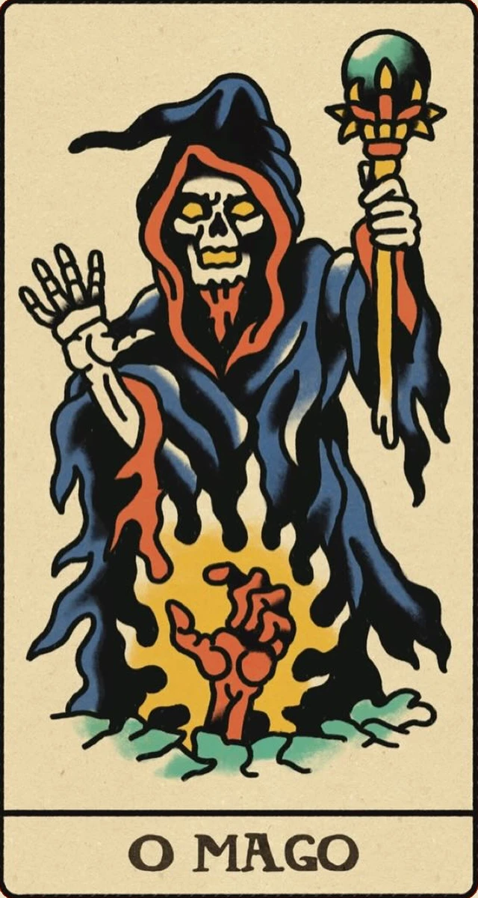
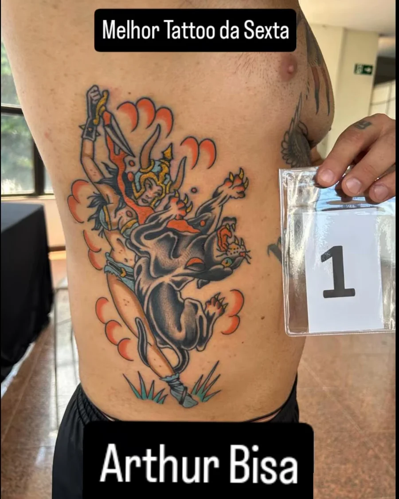
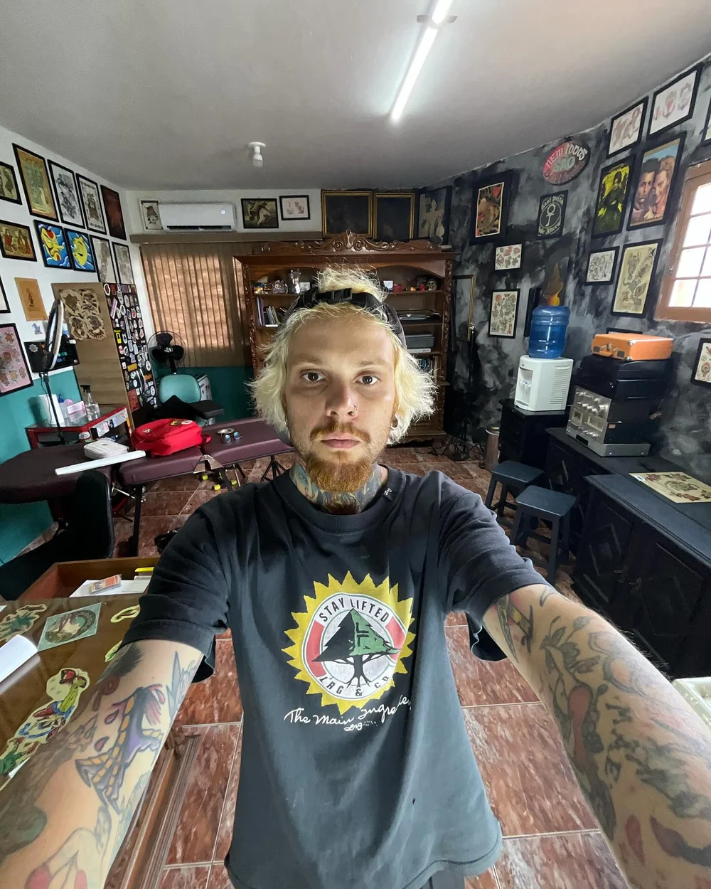

Bisa
Tatuagens radicais
Marialva · PR

Do tarot do Bisa · O Mago
Desde 2009
Flash e freehand
Trabalhos
Tradicional colorido, oriental e preto e cinza. Fotos tiradas logo depois da sessão.
O tarot do Bisa
Doze arcanos desenhados como flash, com moldura e letreiro. Todos disponíveis para tatuar. Toque na carta que te escolheu.
Flashs disponíveis
Folhas das pastas do estúdio. Dá para tatuar como está ou ajustar para encaixar no seu corpo.
Fechamentos desenhados
Antebraço, punho e mão pensados como uma peça só. Cada série já está pronta para virar braço.
Premiado em Londrina
"Competir não é algo que eu me empenhe muito, mas foi legal e bem significativo ganhar."

- 1.º lugarMelhor Tattoo de Sexta, Expotattoo Londrina 2025
- 2.º lugarCategoria Oriental, Expotattoo Londrina 2025
- Tigers FestTigers Tattoo Fest, Cascavel 2025
- FinalistaConcurso de desenho O Bicho do Paraná

Arthur Bisonho
Tatua desde 2009 e desenha tudo o que tatua: em lápis de cor, nanquim, papel vegetal e até em tábua de madeira achada perto de casa.
Tradicional de traço grosso e cor chapada, com gueixas, hannyas, tengus e dragões do oriental, magos e monstros de RPG e as cartas do tarot.
O estúdio novo está sendo montado num contêiner em Marialva. Horários e disposição, sempre.
Marcar tatuagem
Preencha o básico e o pedido chega pronto no WhatsApp do Bisa. Ele responde com orçamento e datas.
Estúdio novo em Marialva · PR, endereço em breve. Prefere o Instagram? Mande um Direct.